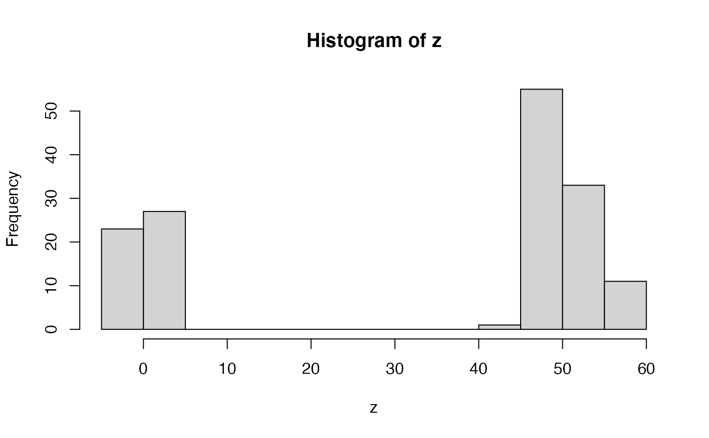

This function calculates highest density intervals (HDIs) for a given univariate vector. Typically, this is done to obtain highest posterior density (HPD) for each freely varying parameter estimated in the posterior of a Bayesian MCMC analysis. If these intervals are calculated for more than one variable, they are referred to instead as regions.
highestDensityInterval( dataVector, alpha, coda = FALSE, verboseMultimodal = TRUE, stopIfFlat = TRUE, ... )
| dataVector | A vector of data, which can be reasonably assumed to represent independent, identically-distributed random variables, such as estimates of a parameter from a Bayesian MCMC. |
|---|---|
| alpha | The threshold used for defining the highest density frequency cut-off. If the highest density interval is applied to a Bayesian MCMC posterior sample, then the interval is effectively calculated for this value as a posterior probability density. |
| coda | Default is |
| verboseMultimodal | If |
| stopIfFlat | If |
| ... | Additional arguments passed to |
By default, HDI calculation is preformed by fitting
a kernal density estimate (KDE) via R function density
with default bandwidth, rescaling the kernal to a density, sorting intervals along the KDE
by that density, and then summing these values from largest to smallest, until the desired
alpha is reached. This algorithm is quick, and accounts for potentially multimodal distributions,
or those with complex shapes, unlike unimodal intervals, such as quantiles, or the
HPDinterval in package coda.
Alternatively, a user can opt to use function HPDinterval from package coda
to calculate highest density intervals. These will work as long as the data has a single mode
- data with multiple modes may have overly large quantiles (to encompass those multiple modes),
resulting in overly wide estimates of coverage.
Hyndman, R. J. 1996. Computing and Graphing Highest Density Regions. The American Statistician 50(2):120-126.
HPDinterval in package coda for an
alternative used by older versions of TreEvo
which cannot properly handle multimodal distributions.
set.seed(444) # let's imagine we have some variable with # an extreme bimodal distribution z <- sample(c(rnorm(50, 1, 2), rnorm(100, 50, 3))) hist(z)# now let's say we want to know the what sort of values # are reasonably consistent with this distribution # for example, let's say we wanted the ranges within # which 80% of our data occurs # one way to do this would be a quantile # two tailed 80% quantiles quantile(z, probs = c(0.1, 0.9))#> 10% 90% #> -0.774775 54.214837# that seems overly broad - there's essentially no density # in the central valley - but we want to exclude values found there! # A value of 30 doesn't match this data sample, right?? # the problem is that all quantile methods are essentially based on # the empirical cumulative distribution function - which is monotonic # (as any cumulutative function should be), and thus # quantiles can only be a single interval # A different approach is to use density from stats density(z)#> #> Call: #> density.default(x = z) #> #> Data: z (150 obs.); Bandwidth 'bw' = 7.836 #> #> x y #> Min. :-26.6190 Min. :5.516e-05 #> 1st Qu.: 0.1252 1st Qu.:1.175e-03 #> Median : 26.8694 Median :6.011e-03 #> Mean : 26.8694 Mean :9.336e-03 #> 3rd Qu.: 53.6136 3rd Qu.:1.524e-02 #> Max. : 80.3578 Max. :3.169e-02# we could then take the density estimates for # particular intervals, rank-order them, and # then cumulative sample until we reach # our desired probability density (alpha) # let's try that alpha <- 0.8 zDensOut <- density(z) zDensity <- zDensOut$y/sum(zDensOut$y) inHPD <- cumsum(-sort(-zDensity)) <= alpha # now reorder inHPD <- inHPD[order(order(-zDensity))] colDens <- rep(1, length(zDensity)) colDens[inHPD] <- 2 # and let's plot it, with colors plot(zDensOut$x, zDensity, col = colDens)# and we can do all that (except the plotting) # with highestDensityInterval highestDensityInterval(z, alpha = 0.8)#>#> LowerBound_alpha=0.8 UpperBound_alpha=0.8 #> [1,] -7.149641 8.132761 #> [2,] 37.860174 62.772584############################# # example with output from doRun_prc data(simRunExample) # we'll use summarizePosterior, which just automates picking # the last generation, and freely-varying parameters for HDRs # alpha = 0.95 summarizePosterior( resultsBMExample[[1]]$particleDataFrame, alpha = 0.95)#> $starting_1 #> $starting_1$mean #> [1] 9.772155 #> #> $starting_1$sd #> [1] 0.126498 #> #> $starting_1$HPD #> LowerBound_alpha=0.95 UpperBound_alpha=0.95 #> [1,] 9.478273 10.01189 #> #> #> $intrinsic_1 #> $intrinsic_1$mean #> [1] 0.03650089 #> #> $intrinsic_1$sd #> [1] 0.02126776 #> #> $intrinsic_1$HPD #> LowerBound_alpha=0.95 UpperBound_alpha=0.95 #> [1,] -0.005969742 0.07973995 #> #># you might be tempted to use alphas like 95%, but with bayesian statistics # we often don't sample the distribution well enough to know # its shape to exceeding detail. alpha = 0.8 may be more reasonable. summarizePosterior( resultsBMExample[[1]]$particleDataFrame, alpha = 0.8)#> $starting_1 #> $starting_1$mean #> [1] 9.772155 #> #> $starting_1$sd #> [1] 0.126498 #> #> $starting_1$HPD #> LowerBound_alpha=0.8 UpperBound_alpha=0.8 #> [1,] 9.593231 9.941538 #> #> #> $intrinsic_1 #> $intrinsic_1$mean #> [1] 0.03650089 #> #> $intrinsic_1$sd #> [1] 0.02126776 #> #> $intrinsic_1$HPD #> LowerBound_alpha=0.8 UpperBound_alpha=0.8 #> [1,] 0.004411246 0.06350302 #> #>